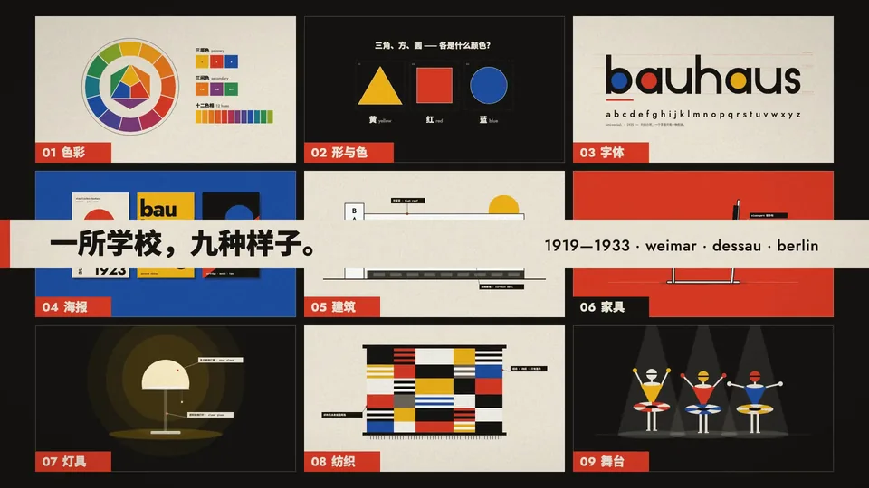
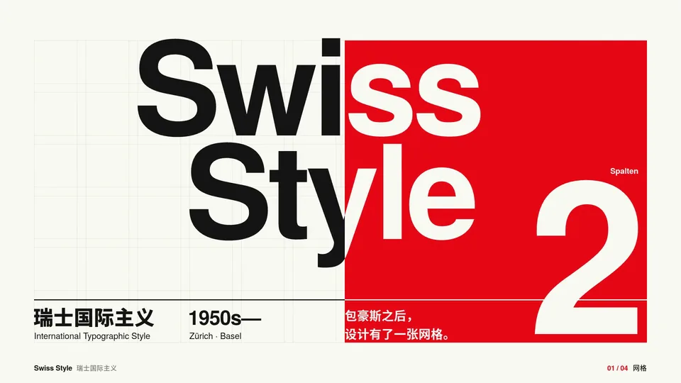
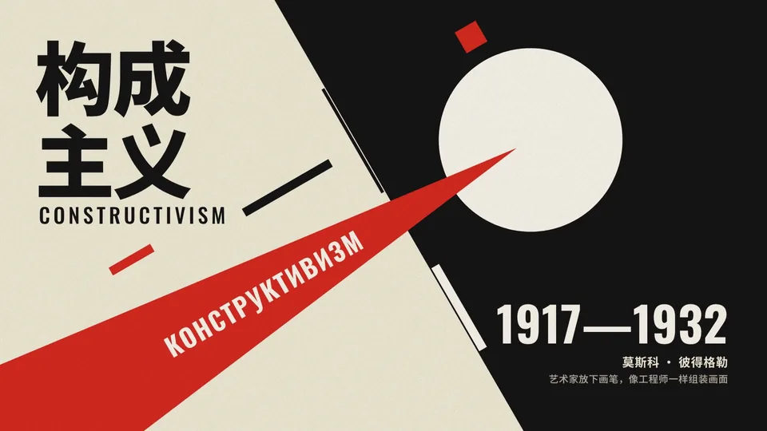
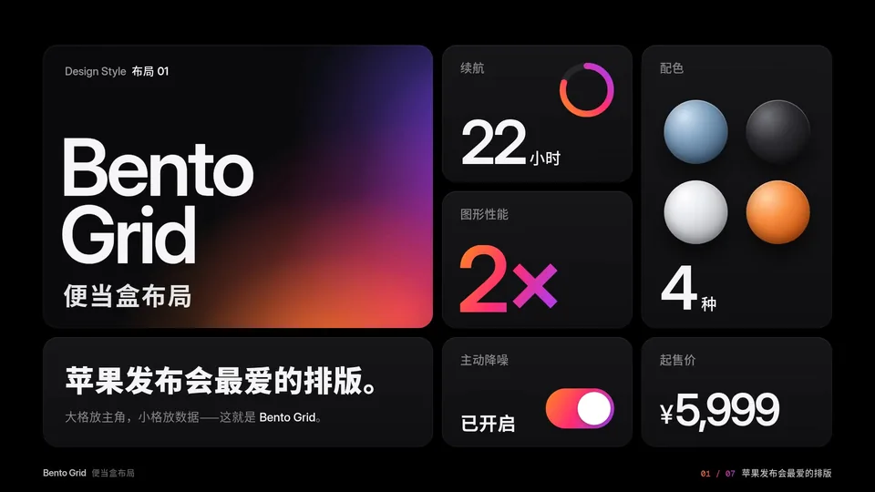
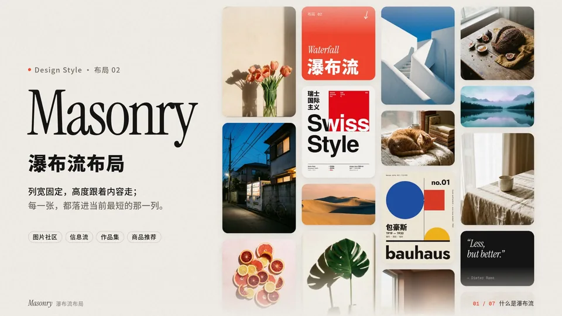
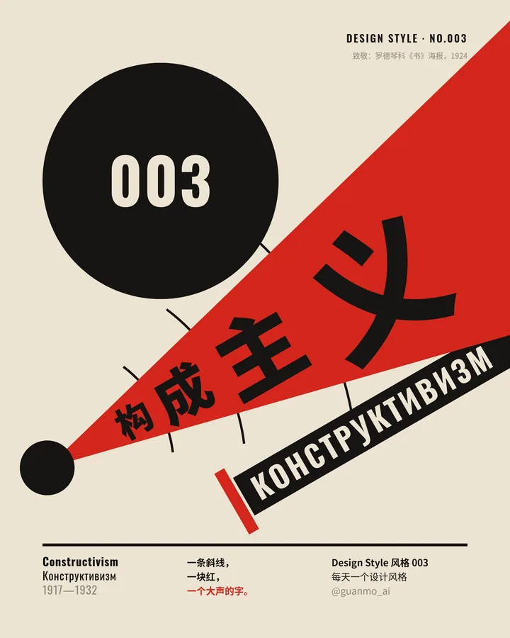
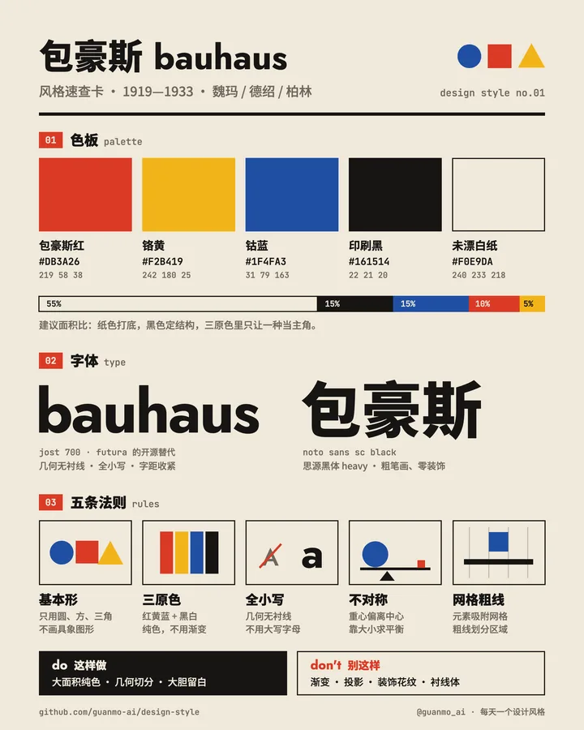
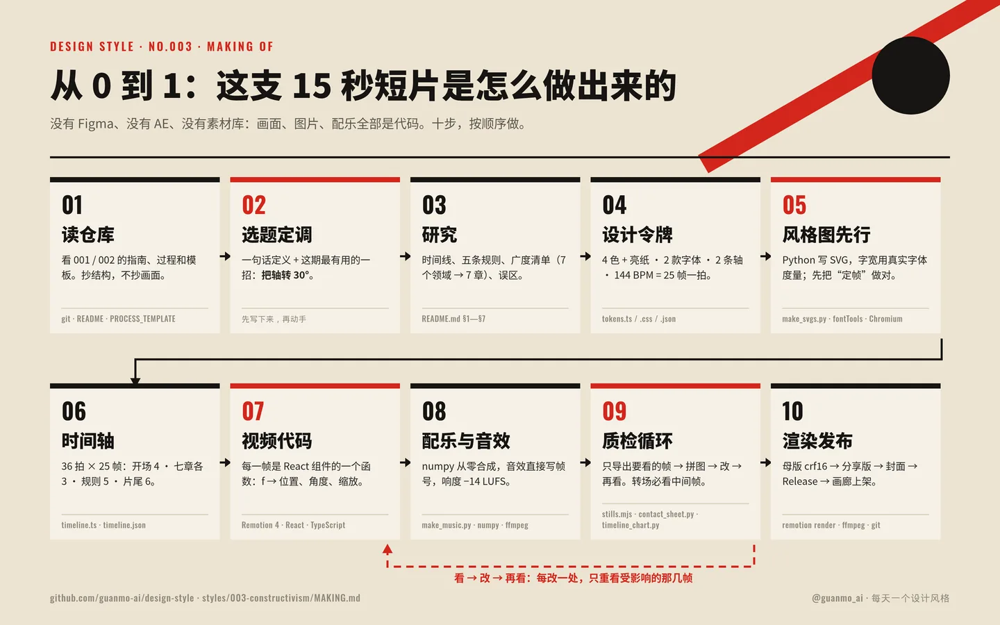
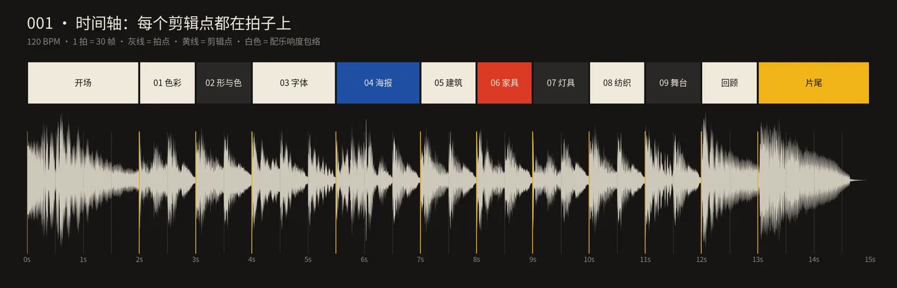

这是什么项目
Design Style（中文名「每天一个设计风格」）是观默 @guanmo_ai 在 2026 年 10 月开的一个开源设计参考库，自我定位是「面向设计师与 AI 的开源设计风格库」（Design references for humans and AI）。它的做法是一期拆一种设计语言：给出一支 15 秒的动效短片、一组 4 张竖版风格图、一份风格指南（历史、规则、色板、字体、版式、误区、AI 提示词），以及可复用的设计令牌和全部源码。
内容分两条线：设计风格（Style，三位期号，如 001 包豪斯）讲视觉语言；布局方式（Layout，两位期号，如 01 便当盒）讲信息怎么排。截至 2026-10-22 已经发了 5 期，仓库约 83 星。
五个要点
- 一期一个风格，一个风格一招：每期先写出“观众能带走的一招”（比如构成主义的“把轴转 30°，版面就开始动”），所有画面都围着这一招服务。
- 全部用代码做：短片用 Remotion（React + TypeScript）逐帧写成，配乐和音效用 numpy 从零合成，风格图是 Python 手写 SVG；没有 Figma / AE / 素材库 / AI 生图。改一个数字就能重出。
- 设计令牌是核心：颜色（含面积比例）、字体、线宽、节拍、轴角度写进
tokens.ts / tokens.css / tokens.json，视频、图片、网页共用同一套数值——tokens.json也正适合直接喂给 AI 当审美约束。 - 过程完全公开：每期有
PROCESS.md（设计上怎么想、哪里推翻重来，附联系表、时间轴图），003 起加了MAKING.md（十步从 0 到 1 + 开工提示词）。003 期本身就是由 AI 智能体在 Linux 沙盒里做完、人只定方向和审片。 - 统一规格可复刻：15 秒 = 900 帧 @ 60fps，转场全部落在拍点；结构固定为“钩子 → 6–9 个章节 → 回顾 → 片尾”；风格图统一 1080×1350（X / 小红书竖图比例）；只用可免费商用的开源字体。
目前有哪几期





| 期 | 名称 | 短片做了什么（概括） | 节拍 | 成片 |
|---|---|---|---|---|
| 001 | 包豪斯 | 9 个章节依次讲色彩、形与色、字体、海报、建筑、家具、灯具、纺织、舞台，最后九宫格回顾；圆 / 方 / 三角轮流做转场 | 120 BPM | day-01 |
| 002 | 瑞士国际主义 | 一张 12 × 6 网格贯穿全片，红色接力换幕 | 120 BPM | day-02 |
| 003 | 构成主义 | 全片只有两条轴（−30° / 60°），红楔、黑圆、粗条接力换幕，真西里尔字母 | 144 BPM | day-03 |
| L01 | 便当盒布局 | 同一套圆角卡片一路变形：发布会 → 来历 → 规则 → 用法 | 150 BPM | layout-01 |
| L02 | 瀑布流布局 | 26 张卡片在 13 种排法之间流动（落雨 → 砌石墙 → 最短列算法 → Pinterest → 手机 → 响应式） | ≈128.6 BPM | layout-02 |
计划中（作者注明顺序可能调整）：装饰艺术 Art Deco、孟菲斯 Memphis、新粗野主义网页、Y2K、日式极简等。
每一期的“四件套”
作者把每期的固定产出概括为“视频 · 风格图 · 制作过程 · 源代码”。拆开看：
| 产出 | 规格 | 对应文件 |
|---|---|---|
| 15 秒动效短片 | 1920×1080 · 60fps · 配乐音效全部代码合成；成片放在 GitHub Releases | video/*.tsx、audio/make_music.py |
| 4 张风格图 / 布局图 | 1080×1350；风格：海报 · 速查卡 · 今天的应用（App UI）· 图案；布局：海报 · 速查卡 · 布局×风格 / 对照 · 模板 | images/*.svg；images/preview/ 为内嵌字体子集、在 GitHub 上点开即最终效果的 SVG |
| 风格 / 布局指南 | 10 节：来历 · 五条规则 · 色板 · 字体 · 版式参数 · 这样做/别这样 · 误区 · AI 提示词 · 15 秒分镜 · 文件 | README.md |
| 设计令牌 | 一份数值三种格式 | tokens.ts（视频）· tokens.css（网页）· tokens.json（画廊与 AI） |
| 制作过程 | 研究 → 令牌 → 风格图 → 分镜 → 改版 → 质检 → 发布 | PROCESS.md、process/（联系表、时间轴图）、003 起 MAKING.md |


以构成主义的 tokens.json 为例，它不仅给色值，还给出面积比例（旧纸 #ECE4D2 占 50%、印刷黑 #161412 占 30%、构成红 #D3261C 占 15%、网点灰 5%），字体（Oswald 代替 1920 年代手绘压缩无衬线，中文用 Noto Sans SC），以及这一期最关键的“轴”令牌：主轴 −30°、副轴 60°，外加 60fps / 144 BPM / 每拍 25 帧的动效参数。
它是怎么做出来的

MAKING.md 把一期拆成十步，每一步写明“做什么 → 产出 → 过关标准”。概括如下：
- 读仓库：通读前几期的 README / PROCESS / tokens / video，列出每期必须有的产出——“抄结构，不抄画面”。
- 选题与一招：一句话定义 + 观众能带走的一招；答不出“在演示哪一招”的画面删掉。
- 研究：只写查得到的年份；3–5 条可执行规则；“广度清单”（海报、电影、建筑、纺织、舞台、书籍、今天……）直接变成视频章节。
- 设计令牌：先定系统再画画面。所有斜向元素都用同一个“沿主轴走 u、沿副轴走 n”的定位函数，TS 版给视频、Python 版给 SVG，两边是同一套数学。
- 风格图先行：先把静止画面做对——这几张图就是视频的“定帧”。
- 时间轴：先写节拍再写动画，每次换幕落在拍点，每章一个主角、一个动作（
process/timeline.json）。 - 视频代码：Remotion 里每一帧是
frame → 画面的函数；过关标准是“任何一帧截下来都能当海报”。 - 配乐音效：和画面共用帧号，用 numpy 合成鼓、贝斯、铜管、铁砧、打字机等。
- 质检循环：导出关键帧、联系表、节拍时间轴图，看 → 改 → 再看。
- 渲染与发布：渲染 crf16 母版，再用 ffmpeg 压各平台可播的分享版；取第 90 帧做封面；一期一个提交（视频不进 git）；发 Release 并附 SHA-256；最后更新画廊目录。

工具链全部开源或免费：Remotion 4.0.454 + React 19 + TypeScript、Node.js、Python（fontTools 做字体度量和子集化内嵌、Pillow / matplotlib 画过程图）、Playwright + Chromium 把 SVG 渲成 2x PNG 和导出关键帧、ffmpeg 做响度和抽帧。作者说明一台没有显卡的 2 核机器就能跑完整个流程（Remotion 本身对个人与小团队免费，商业使用需看其许可）。
怎么用：看、抄、喂给 AI、自己做一期
1）只是看
直接打开网页画廊：可搜索、按「设计风格 / 布局方式」筛选，点卡片看视频、放大或下载 SVG 风格图，并在站内阅读每期的指南和制作过程。
2）拿来当设计参考 / AI 约束
- 每期 README 第 8 节是「AI 提示词（直接复制）」，分图片（Midjourney / 即梦 / ChatGPT 图像）和视频（Runway / 可灵 / Sora）两段，色值、字体、禁忌都写死在提示词里。
- 把某期的
tokens.json+ README 的“五条规则 / 这样做·别这样”交给 coding agent，就是一份现成的“风格约束包”，可用于生成网页、海报或 Remotion 动画。 tokens.css可直接在网页项目里引用。
3）在本地重出成片
git clone https://github.com/guanmo-ai/design-style.git && cd design-style
npm install
npm run fonts # 下载开源字体到 public/fonts
pip install numpy fonttools
npm run studio # 浏览器里逐帧预览、改参数
npm run render:003 # 生成配乐 → 渲染 out/003-constructivism-master.mp4
npx playwright install chromium
npm run images:003 # 生成 4 张风格图 → preview SVG + 2x PNG需要 Node 18+、Python 3.10+、ffmpeg。风格对应 render:001/002/003，布局对应 render:L01/L02；Remotion 里注册的 Composition 名为 S001-Bauhaus、L01-BentoGrid 等。
4）让 AI 帮你做下一期
MAKING.md 第 4 节附了一段“开工提示词”：大意是让智能体先读前几期的 README / PROCESS / MAKING 和 docs 模板、列出必备产出，再写一句话定义和“一招”，然后按研究 → 令牌 → 风格图 → 时间轴 → 动画 → 声音 → 质检的顺序推进。新的一期放进 styles/NNN-name/ 或 layouts/NN-name/，按 docs/GALLERY.md 发 Release、填 gallery/data/works.json 即可进入画廊。
仓库结构
design-style/
├─ src/ Remotion 入口，每期一个 Composition；lib/ 放缓动、弹簧、关键帧轨道与胶片颗粒
├─ styles/NNN-name/ 风格：README（指南）· PROCESS · MAKING · tokens.{ts,css,json}
│ · video/ · audio/make_music.py · images/（+ preview/）· process/
├─ layouts/NN-name/ 布局：结构同上
├─ gallery/ 网页画廊静态站源码 + works.json（MIT）
├─ scripts/ 字体下载 · SVG→PNG · 关键帧截图 · 联系表 · 节拍时间轴 · 画廊构建
├─ docs/ PROCESS / MAKING 模板 · 画廊维护文档
└─ tests/gallery/ 画廊目录与文档测试网页画廊
画廊是独立的静态站：构建时读取本仓库 Releases，下载视频并校验 SHA-256，把每期 README / PROCESS 用 Marked + sanitize-html 转成站内阅读页；GitHub Actions 在推送 main 时跑“安装锁定依赖 → 测试 → 下载核验视频 → 构建 → 发布检查 → 部署 Pages”，失败就不部署。视觉上沿用了作者另一个项目 Awesome AI Motion 的暖纸色画廊样式。仓库首页 README 顶部的视频预览表格也是由脚本按 works.json 自动生成的。
评论与启发
- “给 AI 的审美参考”这个定位很准。相比只给一句风格提示词，这里给的是可计算的约束：色值 + 面积比例、字体及替代、网格模块、轴角度、节拍帧数。这正是 coding agent 最容易执行、也最不容易“跑偏”的形式。
- “先把静止画面做对，再让它动”是对代码动效最实用的一条经验，和本站收录的多篇 Remotion / Opus 动效手册（帧号驱动、静帧评审）殊途同归。
- 过程文档本身就是教材。PROCESS.md 记录了推翻重来的版本（v1 联系表 → v2 分镜 → 改版），比成片更有学习价值。
- 需要注意：项目很新（2026-10-20 创建），目前只有 5 期；根目录没有开源许可证，视频与图片转载须注明出处，商用前应向作者确认。
本站相关
- 15 种 MG 动态设计风格：每种一支 10 秒代码成片 + 完整提示词 + 全部源码——同样是“一个风格一支代码短片”的思路。
- OPUSCAR 98：98 种奥斯卡最佳影片风格 + 提示词 + 导演编排——影像风格包的另一种规模。
- 龚浩 Snail 的 Skill 风格库：93 套中式影像风格包——风格以 Skill 形式交给 agent。
- Huashu-motion：让 coding agent 一键直出商业级产品宣传片
- Prompt Motion：Claude Opus 5.5 动态视频画廊（附提示词与 Skill）
- 用 Opus 5.5 做动效工程：做能卖钱的产品发布短片——Remotion 帧号驱动、静帧评审，与本项目 MAKING.md 互相印证。
- Opus 5.5 动效手册：多数“一句提示词”视频其实不是一句话
- 审美提升：硅谷设计师私藏的 10 个网站 + 灵感库 · 设计资源大赏
来源与授权
- 原项目：https://github.com/guanmo-ai/design-style（作者 观默 @guanmo_ai）；网页画廊：https://guanmo-ai.github.io/design-style/
- 许可状态：根目录无开源许可证；README 声明“代码欢迎学习和改造，转发视频和图片请注明出处 观默 @guanmo_ai”；
gallery/目录代码为 MIT；字体为 SIL OFL 1.1 / GUST Font License。 - 本页处理方式：中文导读（非翻译），仅短摘引；图片为原仓库素材缩略与画廊首页截图，均注明出处。
- 删除请求：https://github.com/BreakDimbo/zh-blog-mirrors/issues/new?title=Removal%20request